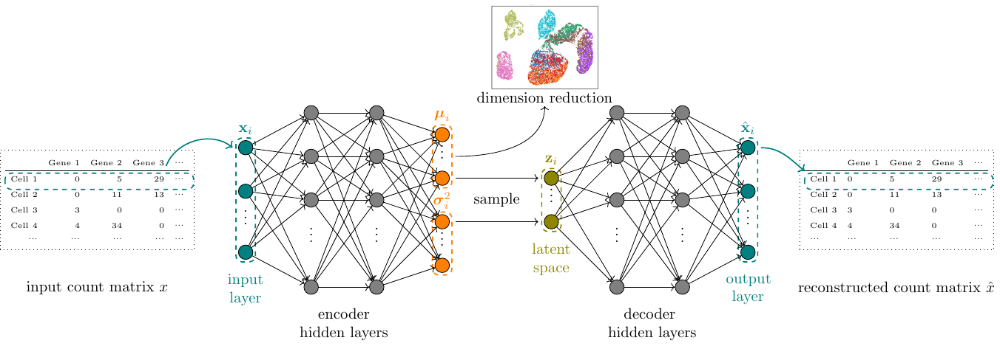
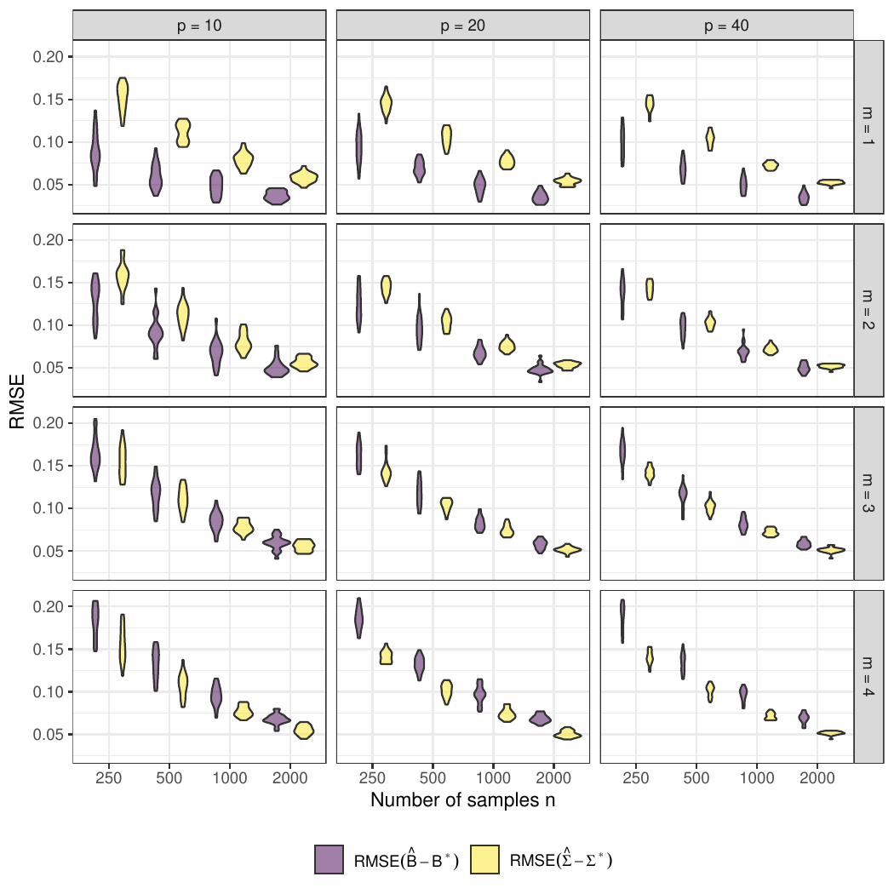
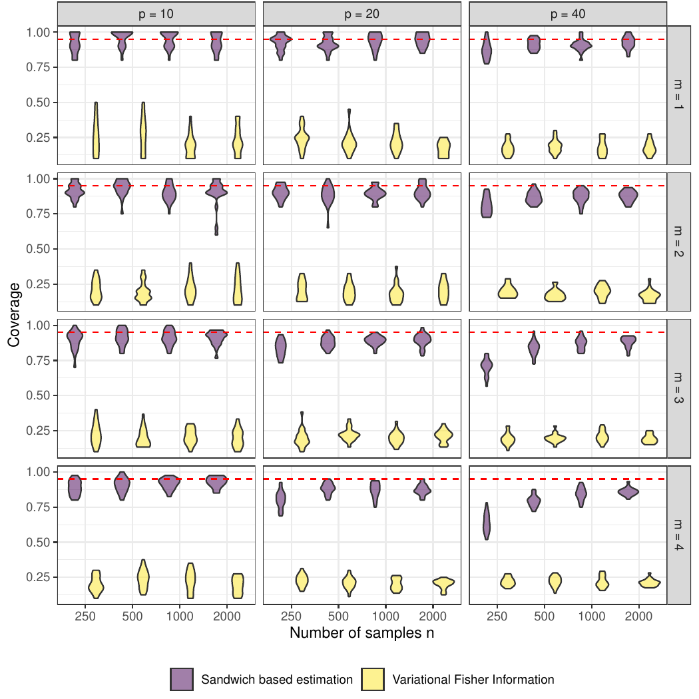

Background on
the Poisson-lognormal Family
Model, inference
Model for multivariate count data
The Poisson Lognormal model (PLN)
PLN [@AiH89] is a multivariate generalized linear model, where
- the counts \(\mathbf{Y}_i\in\mathbb{N}^p\) are the response variables
- the main effect is due to a linear combination of the covariates \(\mathbf{x}_i\in\mathbb{R}^d\)
- a vector of offsets \(\mathbf{o}_i\in\mathbb{R}^p\) can be specified for each sample
\[ \quad \mathbf{Y}_i | \mathbf{Z}_i \sim^{\text{iid}} \mathcal{P}\left(\exp\{\mathbf{Z}_i\}\right), \qquad \mathbf{Z}_i \sim \mathcal{N}({\underbrace{\mathbf{o}_i + \mathbf{x}_i^\top\mathbf{B}}}_{{\boldsymbol\mu}_i},\boldsymbol\Sigma). \]
Typically, \(n\approx 10s \to 1000s\), \(p\approx 10s \to 1000s\), \(d \approx 1 \to 10\)
Properties: over-dispersion, arbitrary-signed covariances
- mean: \(\mathbb{E}(Y_{ij}) = \exp \left( o_{ij} + \mathbf{x}_i^\top {\mathbf{B}}_{\cdot j} + \sigma_{jj}/2\right) > 0\)
- variance: \(\mathbb{V}(Y_{ij}) = \mathbb{E}(Y_{ij}) + \mathbb{E}(Y_{ij})^2 \left( e^{\sigma_{jj}} - 1 \right) > \mathbb{E}(Y_{ij})\)
- covariance: \(\mathrm{Cov}(Y_{ij}, Y_{ik}) = \mathbb{E}(Y_{ij}) \mathbb{E}(Y_{ik}) \left( e^{\sigma_{jk}} - 1 \right).\)
Natural extensions of PLN
Various tasks of multivariate analysis
Dimension Reduction: rank constraint matrix \(\boldsymbol\Sigma\). [@PLNPCA]
\[\mathbf{Z}_i \sim \mathcal{N}({\boldsymbol\mu}_i, \boldsymbol\Sigma = \mathbf{C}\mathbf{C}^\top), \quad \mathbf{C} \in \mathcal{M}_{pk} \text{ with orthogonal columns}.\]
Classification: maximize separation between groups with means [@PLNmodels]
\[\mathbf{Z}_i \sim \mathcal{N}(\sum_k {\boldsymbol\mu}_k \mathbf{1}_{\{i\in k\}}, \boldsymbol\Sigma), \quad \text{for known memberships}.\]
- Clustering: mixture model in the latent space [@PLNmodels]
\[\mathbf{Z}_i \mid i \in k \sim \mathcal{N}(\boldsymbol\mu_k, \boldsymbol\Sigma_k), \quad \text{for unknown memberships}.\]
- Network inference: sparsity constraint on inverse covariance. [@PLNnetwork]
\[\mathbf{Z}_i \sim \mathcal{N}({\boldsymbol\mu}_i, \boldsymbol\Sigma = \boldsymbol\Omega^{-1}), \quad \|\boldsymbol\Omega \|_1 < c.\]
Estimation
Estimate \(\theta = (\mathbf{B}, {\boldsymbol\Sigma})\), predict the \(\mathbf{Z}_i\), while the model marginal likelihood is
\[\begin{equation*} p_\theta(\mathbf{Y}_i) = \int_{\mathbb{R}_p} \prod_{j=1}^p p_\theta(Y_{ij} | Z_{ij}) \, p_\theta(\mathbf{Z}_i) \mathrm{d}\mathbf{Z}_i \end{equation*}\]
Direct approach
- Numerical integration [@AiH89]: limited to a couple of variables
- Gibbs Markov chain Monte Carlo (MCMC) sampling [@tikhonov2020joint]. Last for ever
- Stochastic gradient ascent [@baey2023efficient]: promising but too generic
Expectation-Maximization
\[\begin{equation*} \log p_\theta(\mathbf{Y}) = \mathbb{E}_{p_\theta(\mathbf{Z}\,|\,\mathbf{Y})} [\log p_\theta(\mathbf{Y}, \mathbf{Z})] + \mathcal{H}[p_\theta(\mathbf{Z}\,|\,\mathbf{Y})], \text{ with } \mathcal{H}(p) = -\mathbb{E}_p(\log(p)). \end{equation*}\]
EM requires to evaluate (some moments of) \(p_\theta(\mathbf{Z} \,|\, \mathbf{Y})\), but there is no close form!
- MCMC techniques on sampling space reducedwith composite likelihood [@pln-composite]
- Variational approaches [e.g. @blei2017variational]: use a surrogate of \(p_\theta(\mathbf{Z} \,|\, \mathbf{Y})\)
Variational Inference
Use a proxy \(q_\psi\) of \(p_\theta(\mathbf{Z}\,|\,\mathbf{Y})\) minimizing a divergence in a class \(\mathcal{Q}\) (e.g, Küllback-Leibler)
\[\begin{equation*} q_\psi(\mathbf{Z})^\star \in \arg\min_{q\in\mathcal{Q}} D\left(q(\mathbf{Z}), p(\mathbf{Z} | \mathbf{Y})\right), \, \text{e.g.}, D(.,.) = KL(., .) = \mathbb{E}_{q_\psi}\left[\log \frac{q(z)}{p(z)}\right]. \end{equation*}\]
and maximize the ELBO (Evidence Lower BOund)
\[\begin{equation*} J(\theta, \psi) = \log p_\theta(\mathbf{Y}) - KL[q_\psi (\mathbf{Z}) || p_\theta(\mathbf{Z} | \mathbf{Y})] = \mathbb{E}_{\psi} [\log p_\theta(\mathbf{Y}, \mathbf{Z})] + \mathcal{H}[q_\psi(\mathbf{Z})] = \frac{1}{n} \sum_{i = 1}^n J_i(\theta, \psi_i) \end{equation*}\]
Resulting Variational EM
VE step: optimize \(\boldsymbol{\psi}\) (can be written individually) \[\begin{equation*} \psi_i^{(h)} = \arg \max J_{i}(\theta^{(h)}, \psi_i) \left( = \arg\min_{q_i} KL[q_i(\mathbf{Z}_i) \,||\, p_{\theta^h}(\mathbf{Z}_i\,|\,\mathbf{Y}_i)] \right) \end{equation*}\]
M step: optimize \(\theta\) \[\theta^{(h)} = \arg\max \frac{1}{n}\sum_{i=1}^{n}J_{Y_i}(\theta, \psi_i^{(h)})\]
Implementations
See https://pln-team.github.io/repositories/
PLNmodels Medium scale problems (R/C++ package)
- V-EM: exact M-step + optimization for VE-stem
- algorithm: conservative convex separable approximations [@Svan02]
- implementation:
NLoptnonlinear-optimization library [@nlopt]
\(\rightsquigarrow\) Up to thousands of sites ( \(n \approx 1000s\) ), hundreds of species ( \(p\approx 100s\) )
pyPLNmodels Large scale problems (Python/Pytorch module)
- V-EM: exact M-step + optimization for VE-stem
- algorithm: Rprop (gradient sign + adaptive variable-specific update) [@rprop]
- implementation:
torchwith GPU auto-differentiation [@pytorch]
\(\rightsquigarrow\) Up to \(n \to 100,000\) and \(p\approx 10,000s\)
PLN-PCA and Variational Auto-Encoders

- The Decoder is the generative model \(p_{\theta}(\mathbf{Y}_i | \mathbf{Z}_i)\)
- The Encoder perform performs variational by approximating the posterior distribution with \(q_\psi(\mu_i,\sigma^2_i)\)
- VAE maximize a lower bound of the marginal \(\log p_{\theta}(\mathbf{Y})\)
\[ \log p_{\theta}(\mathbf{Y}_i) \geq \mathbb{E}_{q_{\psi}(\mathbf{Z}_i|\mathbf{X}_i)}\left[\log p_{\theta}(\mathbf{Y}_i | \mathbf{Z}_i)\right] - D_{KL}(q_{\psi}(\mathbf{Z}_i|\mathbf{Y}_i)||p_{\theta}(\mathbf{Z}_i)) \]
Variational Estimator: properties
M-estimation framework [@van2000asymptotic]
Let \(\hat{\psi}_i = \hat{\psi}_i(\theta, \mathbf{Y}_i) = \arg \max_{\psi} J_i(\theta, \psi)\) and consider the stochastic map \(\bar{J}_n\) defined by
\[\bar{J}_n \; : \quad \theta \mapsto \frac{1}{n}\sum_{i=1}^{n} J_i(\theta, \hat{\psi}_i) \stackrel{\Delta}{=} \frac{1}{n}\sum_{i=1}^{n} \bar{J}_i(\theta)\]
M-estimation suggests that \(\hat{\theta}^{\text{ve}} = \arg\max_{\theta} \bar{J}_{n}(\theta)\) should converge to \(\bar{\theta} = \arg\max_{\theta} \bar{J}(\theta)\) where \(\bar{J}(\theta) = \mathbb{E}_{\theta^\star}[\bar{J}_Y(\theta)] = \mathbb{E}_{\theta^\star}[J_Y(\theta, \hat{\psi}(\theta, Y))]\).
Theorem [@Westling2015]
In this line, [@Westling2015] show that under regularity conditions ensuring that \(\bar{J}_n\) is smooth enough (e.g. when \(\theta\) and \(\psi_i\) are restricted to compact sets), \[ \hat{\theta}^{\text{ve}} \xrightarrow[n \to +\infty]{a.e.} \bar{\theta} \]
Open question: \(\bar{\theta} = \theta^\star\) ? No formal results as \(\bar{J}\) is untractable but numerical evidence suggests so.
Variance: naïve approach
Do as if \(\hat{\theta}^{\text{ve}}\) was a MLE and \(\bar{J}_n\) the log-likelihood.
Variational Fisher Information
For standard PLN, the Fisher information matrix is given by (from the Hessian of \(J\)) by
\[I_n(\hat{\theta}^{\text{ve}}) = \begin{pmatrix} \frac{1}{n}(\mathbf{I}_p \otimes \mathbf{X}^\top)\mathrm{diag}(\mathrm{vec}(\mathbf{A}))(\mathbf{I}_p \otimes \mathbf{X}) & \mathbf{0} \\ \mathbf{0} & \frac12\mathbf{\Omega}^{-1} \otimes \mathbf{\Omega}^{-1} \end{pmatrix}\]
where \(A_{ij} = \exp{M_{ij} + 1/2 S_{ij}}\).
Confidence intervals and coverage
\(\hat{\mathbb{V}}(B_{kj}) = [n (\mathbf{X}^\top \mathrm{diag}(\mathrm{vec}(\hat{A}_{.j})) \mathbf{X})^{-1}]_{kk}, \qquad \hat{\mathbb{V}}(\Omega_{kl}) = 2\hat{\Omega}_{kk}\hat{\Omega}_{ll}\)
The confidence intervals at level \(\alpha\) are given by
\(B_{kj} = \hat{B}_{kj} \pm \frac{q_{1 - \alpha/2}}{\sqrt{n}} \sqrt{\hat{\mathbb{V}}(B_{kj})}, \qquad \Omega_{kl} = \hat{\Omega}_{kl} \pm \frac{q_{1 - \alpha/2}}{\sqrt{n}} \sqrt{\hat{\mathbb{V}}(\Omega_{kl})}\).
Variance : sandwich estimator
Theorem [@Westling2015]
Under additional regularity conditions (satisfied when \(\theta\) and \(\psi_i\) are restricted to compact sets), we have \[ \sqrt{n}(\hat{\theta}^{\text{ve}} - \bar{\theta}) \xrightarrow[]{d} \mathcal{N}(0, V(\bar{\theta})), \quad \text{where } V(\theta) = C(\theta)^{-1} D(\theta) C(\theta)^{-1} \] for \(C(\theta) = \mathbb{E}[\nabla_{\theta\theta} \bar{J}(\theta) ]\) and \(D(\theta) = \mathbb{E}\left[(\nabla_{\theta} \bar{J}(\theta)) (\nabla_{\theta} \bar{J}(\theta)^\intercal \right]\)
Practical computations (chain rule)
\[ \begin{aligned} \hat{C}_n(\theta) & = \frac{1}{n} \sum_{i=1}^n \left[ \nabla_{\theta\theta} J_i - \nabla_{\theta\psi_i} J_i (\nabla_{\psi_i\psi_i} J_i)^{-1} \nabla_{\theta\psi_i} J_i^\intercal \right](\theta, \hat{\psi}_i) \\ \hat{D}_n(\theta) & = \frac{1}{n} \sum_{i=1}^n \left[ \nabla_{\theta} J_i \nabla_{\theta} J_i^\intercal \right](\theta, \hat{\psi}_i) \end{aligned} \]
Caveat
- For \(\theta = (\mathbf{B}, \boldsymbol\Omega)\), \(\hat{C}_n\) requires the inversion of \(n\) matrices with \((p^2 + p d)\) rows/columns…
Empirical consistency

Empirical coverage
